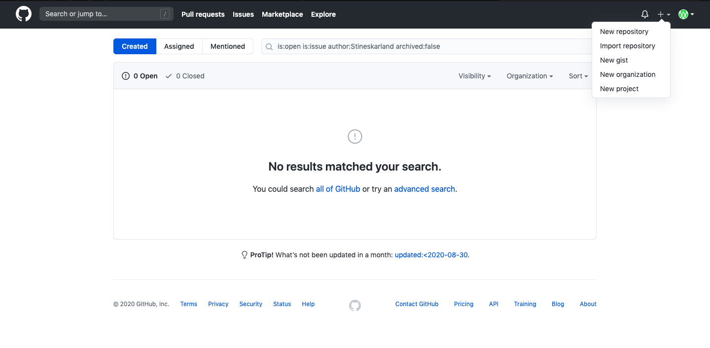

Gå inn på www.github.com og start med lage en ny bruker
Når du har kommet inn på github må du trykke på plusstegnet oppe i høyre hjørnet og klikker på new repository
Når du kommer inn på repositoryen gir du den eit navn under der det står "resporitory navn".
Du velger om du vil legge inn en forklaring på hva du skal bruke den til på "description".
Du må beholde resporitoryen public hvis du vil at andre skal se hva du har laget.
Kryss deretter av alle dei tre boksene, og endre gitignore templaten til jekyll.
 Deretter velger du selv om du vil endre navn på "default branch".
Deretter velger du selv om du vil endre navn på "default branch". Så må du fikse en del for å få det på rett branch slik at nettsiden kan funke.
Da starter du med og trykke på options og bla nedover til du finner stedet hvor det står github pages.
Her endrer du branchen til den branchen du skal bruke og det vil nå være mulig og publisere ei nettside når du er ferdig og kode den.
Filen som du vil at koden skal ta utgangspunkt i må du kalle index.html.